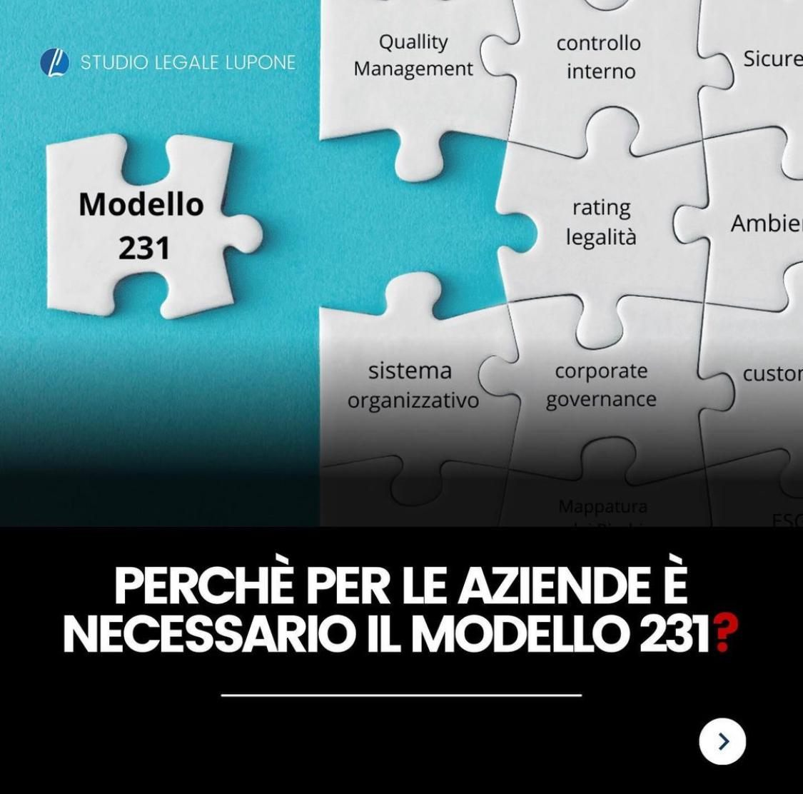

Perché per le aziende è necessario il modello 231
Il decreto 231/2001 consente di ritenere l'ente responsabile di alcuni reati. Il modello organizzativo è lo strumento con cui la società prova di aver predisposto cautele.
Il D.lgs 231/01 ha introdotto il principio secondo il quale le società possono essere ritenute responsabili della commissione di reati. Il Modello 231 è il principale meccanismo di difesa contro queste responsabilità a disposizione delle aziende.
I REATI OGGETTO DELLA NORMATIVA IN ESAME
SONO I SEGUENTI:
1) indebita percezione di erogazioni, truffa in danno dello Stato o di un ente pubblico o per il conseguimento di erogazioni pubbliche e frode informatica in danno dello Stato o di un ente pubblico
2) delitti informatici e trattamento illecito dei dati.
3) delitti di criminalità organizzata
4) concussione, induzione indebita a dare o promettere utilità e corruzione
5) falsità in monete, in carte di pubblico credito, in valori di bollo e in strumenti o segni di riconoscimento
6) delitti contro l’industria e il commercio
7) reati societari
8) delitti con finalità di terrorismo o di eversione dell’ordine democratico
9)pratiche di mutilazione degli organi genitali femminili
10) delitti contro la personalità individuale
11) abusi di mercato
12) omicidio colposo e lesioni colpose gravi o gravissime, commessi con violazione delle norme sulla tutela della salute e sicurezza sul lavoro
13) ricettazione, riciclaggio e impiego di denaro, beni o utilita di provenienza illecita nonché autoriciclaggio 14) delitti in materia di violazione del diritto d’autore
14) induzione a non rendere dichiarazioni o a rendere dichiarazioni mendaci all’autorità giudiziaria
15) reati ambientali
16) impiego di cittadini di paesi terzi il cui soggiorno è irregolare
17) reati transnazionali
VANTAGGI DELL’ADOZIONE DEL MODELLO 231
* Se il reato è stato commesso da una persona sottoposta all’altrui direzione/vigilanza, la società non risponde se verificato osservando gli obblighi di direzione o vigilanza.
* Se il reato è stato commesso da un soggetto apicale, la società non risponde se prova d’avere adottato un efficace Modello 231, nonché che il soggetto apicale ha commesso il reato eludendo fraudolentemente tale Modello